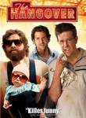

← 2009 →
Overall
Movie Cover Collage Released in 200921 Movies Top 10 series watched
|
Movies released in 2009
The Men Who Stare at Goats (2009) Stephen Klancher: November 7, 2009 Oh man, weird and funny. I love Jeff Bridges and seeing him in a Dudeist role is just so right. Clooney can do weird very well. And Boston's "More Than a Feeling" should be required in every movie. The Boondock Saints II: All Saints Day (2009) Stephen Klancher: October 31, 2009 I had heard that this movie was never going to get made for all kinds of reasons, then Nick just asked if I wanted to see it in a few hours. Surprise! At first I wasn't digging it as much as I remembered having liked the first one. Although its been like 8 years since I watched it or something. But as it went on it kept getting more fun. I liked seeing the boys crash through the window along both sides of Agent bloom. Cool style. And the end was a satisfying meeting.  Jennifer's Body (2009) Stephen Klancher: September 20, 2009 That was actually a lot of fun. Way better than I expected. Creepy at some points, but mostly hilarious.  I Love You, Man (2009) Stephen Klancher: September 10, 2009 Awkwardness reached dangerous levels at some points, but was a very funny movie. "I still want to hang out despite that joke..."  State of Play (2009) Extract (2009)  Inglourious Basterds (2009) Stephen Klancher: August 23, 2009 Brad Pitt was fun but Col. Landa (Christoph Waltz) was great. Some of the violence was pretty gruesome even considering it was Terantino. It made me remember having read someone comparing the Nazis watching Nation's Pride cheering the violence against the Allied soldiers to the audience cheering the violence on screen against the Nazis. Anyway, the inferno was pretty impressive and the face projected on the smoke was creepy cool.  Public Enemies (2009) Stephen Klancher: July 2, 2009 Didn't grab me as much as I would have hoped for something with Johnny Depp and Christian Bale.  Up (2009) Stephen Klancher: June 14, 2009 That was a fantastic movie. Visually very pretty. The kid and the dog are a great counterpoint to the old man. Not many movies manage to be so happy and kid -friendly and actually be so amazing. I walked out of the theater happy!  Partly Cloudy (2009) Stephen Klancher: June 14, 2009 This was the short shown before Pixar's Up. Very cool, very effective job of communicating without dialog. The animals were so cute and the clouds looked so fluffy!  The Hangover (2009) Stephen Klancher: June 6, 2009 Very funny. In addition to the main guys, Mike Tyson and Ken Jeong were great!  Dragonball Evolution (2009) Stephen Klancher: June 4, 2009 As a fan of Dragonball (Z at least) I can't help but enjoy it some. And my expectations were already so low that disappointment was nearly impossible. What was left was just the fun of seeing things and characters I enjoyed. I can't believe they had Christine from Phantom of the Opera as Bulma and Chow Yun-Fat as Roshi. Chi Chi was really cute. No Krillin unfortunately. Bulma did have her Dragonball radar and her capsule transportation. So, yeah, I wouldn't recommend this to anyone, but I couldn't help but watch it. Kamehameha ftw! Terminator Salvation (2009) Stephen Klancher: May 23, 2009 This is a great movie if you love explosions. I'd trade a lot of explosions for some plot about time paradoxes, or characters with motivations, or some other reason to be interested in the conflict behind the explosions. Perhaps some kind of explosions for plot elements barter system could be worked out... a post-apocalyptic movie economy perhaps? I think the best thing about this movie was that looking forward to it made me watch the series, which, with a much smaller explosion budget had to create interesting character conflict and X-Files style "small piece of the puzzle" mysteries. The other advantage is that from now on I will be looking at the Rotten Tomato score before seeing a movie. Star Trek (2009) Stephen Klancher: May 8, 2009 The casting in this was great. The actors felt so natural playing these very well established characters, perfectly mixing the feel of the old characters while still feeling brand new. IMAX + first day + surpassing expectations = <3 X-Men Origins: Wolverine (2009) Stephen Klancher: May 2, 2009 Fun combat scenes and I love Wolverine, but seriously, most scenes in this were just like "why is this happening?", "how does this make sense?" If not for characters I love, it would be easy to call this a bad movie. So as it stands it hurts to say it: This is a bad movie. Futurama: Into the Wild Green Yonder (2009) Releases on 2009-02-24  Crank: High Voltage (2009) Releases on 1969-12-31 Stephen Klancher: April 18, 2009 Whoa... This had the pacing of the first one but then got way more outrageous. Interesting music throughout and always surprising weirdness. A lot of people will hate this for a lot of reasons, but I think it has a sense of style that it executes very well. Don't see if you can't handle violence, nudity, racism, a story that ranges from implausible to impossible to silly, etc... But if you can, see it for the style and surprise: I had a lot of fun.  Observe and Report (2009) Stephen Klancher: April 11, 2009 The standard funny. Last scene was pretty hilarious, Dennis was funny, Coffee Girl was cute.  Watchmen (2009) Stephen Klancher: March 10, 2009 I really enjoyed that movie. Visually awesome and some interesting characters. And with how much was supposedly removed from the theatrical cut, I look forward to the DVD. I had only read a few pages of the comic, but the beginning of the movie matched so well that it felt like deja vu. |
Movie watching by month
![Progress Bar](data:image/png;base64,iVBORw0KGgoAAAANSUhEUgAAASwAAADICAIAAADdvUsCAAAACXBIWXMAAA7EAAAOxAGVKw4bAAAC
90lEQVR4nO3dMWrcUBRA0SRMlTrFLERb8HoEXoH2JK9HMJAinWpXkzKQyrY+XHl8zgIeGsPlNY/v
7/f7/dtD2/d927bjc9Z1XZbl+Bz4z4/6A+CrEyHERAgxEUJMhBATIcRECDERQkyEEBMhxEQIMRFC
TIQQEyHERAgxEUJMhBATIcRECDERQkyEEBMhxEQIMRFCTIQQEyHERAgxEUJMhBATIcRECDERQkyE
EBMhxEQIMRFCTIQQEyHERAgxEUJMhBATIcRECDERQkyEEBMhxEQIMRFCTIQQEyHERAixS/0BnMi+
79u2HZ+zrus8z6NGLctyfM6Z2YQQEyHERAgxEUJMhBATIcRECDERQkyEEBMhxJytvcPAq66HP8Xi
7WxCiIkQYiKEmAghJkKIiRBiIoSYCCEmQoiNvJhxUAIfYBNCTIQQEyHERAgxEUJMhBATIcRECDER
QkyEEPPQU8OJ39s9/N/KJoSYCCEmQoiJEGIihJgIISZCiIkQYiKEmAghJkKIiRBiIoSYCCEmQoiJ
EGIihJgIISZCiIkQYh56+vQGvoM0z/PxObyXTQgxEUJMhBATIcRECDERQkyEEBMhxEQIMRczfCHn
/C9rNiHERAgxEUJMhBATIcRECDERQkyEEBMhxEQIsYtngqBlE0JMhBATIcRECDERQkyEEBMhxEQI
MRFCzENP8BEDT81sQoiJEGIihJgIISZCiIkQYiKEmAghJkKIiRBiztb45/n55/X66/icl5en223Y
qIHvhw38gQO/yiaEmAghJkKIiRBiIoSYCCEmQoiJEGIihNjlnEcSt9vr9fpnxKjf0zSd8Aee8wpk
mo6PGe+cP3DgV9mEEBMhxEQIMRFCTIQQEyHERAgxEUJMhBATIcQ89NQ45ykWCZsQYiKEmAghJkKI
iRBiIoSYCCEmQoiJEGIihJgIISZCiIkQYiKEmAghJkKIiRBiIoSYCCEmQoiJEGIihJgIISZCiIkQ
YiKEmAghJkKIiRBiIoSYCCH2F3RIjovZAKiTAAAAAElFTkSuQmCC)
Series watching by month
![Progress Bar](data:image/png;base64,iVBORw0KGgoAAAANSUhEUgAAASwAAADICAIAAADdvUsCAAAACXBIWXMAAA7EAAAOxAGVKw4bAAAD
WklEQVR4nO3dMU4bURRAURJZCkpBlYJlULiCOmtxiUSXzrthAWYFrIHaBaKgs5QON6REShOS+eRa
43MW8DQgXb3PzBh/en19PeF9drvddrudPmez2azX6+lzmIfP9QXAsRMhxEQIMRFCTIQQEyHERAgx
EUJMhBATIcRECDERQkyEEBMhxEQIMRFCTIQQEyHERAgxEUJMhBATIcRECDERQkyEEBMhxEQIMRFC
bFFfAPzB7L+HxyaEmAghJkKIiRBiIoSYu6PwLwbes7UJISZCiIkQYiKEmAghNvLu6Ozf8YOPYBNC
TIQQEyHERAgxEUJMhBATIcRECDERQkyEEBMhxEQIMRFCTIQQEyHERAgxEUJMhBATIcRECLHFwP/O
dH19PX0OHBubEGIihJgIISZCiIkQYiKEmAghJkKIiRBiIoSYCCEmQoiJEGIihJgIISZCiIkQYiKE
mAghJkKIiRBiIoSYCCEmQoiJEGIihJgIISZCiIkQYiKEmAghJkKIiRBiIoSYCCG2uLn5en7+bfqg
u7vvs//K+oG/q/V6+hhmwiaEmAghJkKIiRBiIoTYor4A+H92u912u50+Z7PZXI97GGATQkyEEBt5
HPUsm48w+/dJbEKIiRBiIoSYCCEmQoiJEGIihJgIIXag744OfMdv7cE/H2DgKwQ2IcRECLEDPY4O
fV1w2Mn25OTH9DlHYrU6ubgYMOf+/ufp6ZcBgw6YTQgxEULsQI+jAw082S6X08fA72xCiIkQYvM/
jh6mgTcPb2/PBgw6Dof5t4lNCDERQsxxlDcDD8lnZw7J72UTQkyEEHMcbez3L4+Pz9PnPDw8rVZX
B3iGHPgDLuf+koRNCDERQkyEEBMhxEQIMRFCTIQQEyHERAgxEUJMhBATIcRECDERQkyEEBMhxEQI
MRFCTIQQEyHERAgxEUJMhBATIcRECDERQkyEEBMhxEQIMRFCTIQQEyHERAgxEUJMhBATIcRECDER
QkyEEBMhxEQIMRFCTIQQEyHEFvUFMNV+//L4+Dx9zsPD0+Xl1fQ5/C2bEGIihJgIISZCiIkQYiKE
mAghJkKIiRBiIoSYCCEmQoiJEGIihJiPMvFm4Keilsvl9DlHwiaEmAghJkKIiRBiIoSYCCEmQoiJ
EGK/AFFIl09b/KxVAAAAAElFTkSuQmCC) |